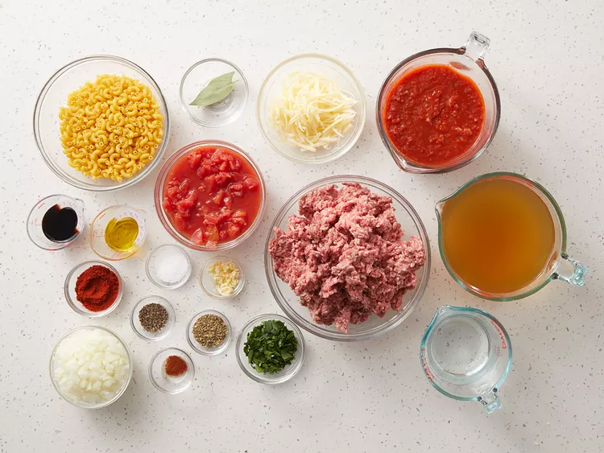
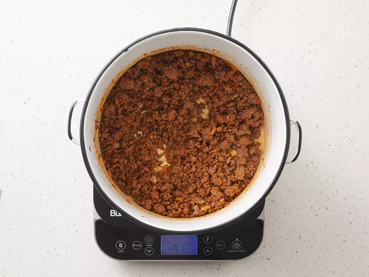
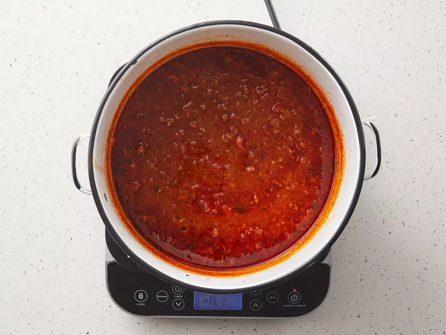
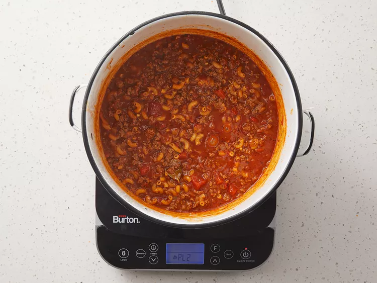

American Goulash

American goulash was one of my all-time favorite comfort food meals when I
was growing up. They served it in my school cafeteria alongside a slice of
buttered white bread and a carton of milk. This Americanized version of goulash
was invented to stretch a small amount of beef into enough food for a not-so-
small family. It's a simple dish that doesn't taste simple, so it's perfect for your
weeknight dinner rotation.
Ingredients
- 1 tablespoon olive oil
- 2 pounds ground beef
- 1 large onion, diced
- 4 cloves garlic, minced
- 2 large bay leaves
- 2 tablespoons paprika
- 2 teaspoons Italian seasoning
- 2 teaspoons kosher salt
- 1/2 teaspoon ground black pepper
- 1 pinch cayenne pepper, or to taste
- 1 quart chicken broth
- 1 (24 ounce) jar marinara sauce
- 1 (15 ounce) can diced tomatoes
- 1 cup water
- 2 tablespoons soy sauce
- 2 cups elbow macaroni
- 1/4 cup chopped italian parsley
- 1 cup shredded white Chedder cheese(optional)
Steps
- Gather all ingredients.

- Heat oil in a pot over medium-high heat. Add ground beef and onion; cook and
stir until beef is browned and crumbly and onion is translucent, about 5
minutes. Continue to cook and stir until liquid is evaporated, 3 to 5 minutes. Add
garlic, bay leaves, paprika, Italian seasoning, salt, black pepper, and cayenne.

- Cook, stirring occasionally, until flavors come together, about 3 minutes. Pour in
broth, marinara sauce, and diced tomatoes. Pour water into the sauce jar, swirl,
and pour into the pot. Stir in soy sauce; bring to a simmer. Reduce the heat to
medium and simmer until flavors intensify, about 30 minutes.

- Increase the heat to medium-high and bring to a rapid simmer. Stir in macaroni;
cook, stirring occasionally, until just barely tender, about 12 minutes. Check for
doneness after 10 minutes.

- Remove from the heat and discard bay leaves. Stir in Cheddar and parsley. Cover
and let rest for 5 minutes. Taste and season as desired.